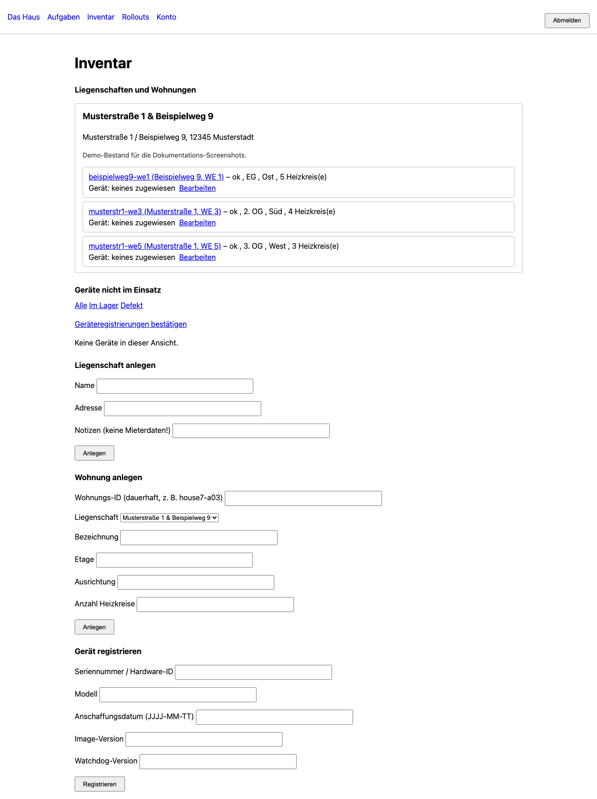

Wohnung hinzufügen
Ziel (Spezifikation, Abschnitt 15.3): Gerät kaputt → Ersatzgerät aus dem Regal → einstecken → wenige Minuten später ist die Wohnung wieder unter Kontrolle. Derselbe Ablauf gilt für die Erstinstallation. Die Id einer Wohnung allein reicht dabei bewusst nicht, um an ihre Konfiguration zu kommen – sonst bekäme, wer eine Id errät, gleich die Zugangsdaten dazu.
Der Ablauf in fünf Schritten
-
Image schreiben. Ein vorbereitetes System (
image/, Debian 13, Raspberry Pi OS oder amd64) wird auf Karte oder Datenträger geschrieben. Auf der Boot-Partition liegt zusätzlichagent-registration.jsonmit der Adresse des Fleet-Dienstes, seinem Zertifikats-Fingerabdruck und einem einmaligen Registrierungscode – keiner dieser Werte ist ein dauerhaftes Geheimnis. - Einstecken. Beim ersten Start erzeugt der Agent sein eigenes Schlüsselpaar, meldet sich mit dem Registrierungscode und seinem öffentlichen Schlüssel bei der Cloud an und zeigt einen kurzen Verifizierungscode an.
- Zuordnen. In der Fleet-Oberfläche, unter Inventar, erscheint das Gerät mit demselben Verifizierungscode. Erst diese Bestätigung gibt die Konfiguration frei – gebunden an den Schlüssel genau dieses Geräts.
- Einrichten. Der Agent holt die Gerätekonfiguration und, bei einem Gerätetausch, die verschlüsselten Betriebsdaten. Der Entschlüsselungsschlüssel wird einmalig in der Fleet-Oberfläche eingegeben – er wird dort nur durchgereicht, nie gespeichert (siehe Sicherheit).
- Fertig. Der Agent startet die vier Container im gesicherten Zustand und meldet den ersten Heartbeat – die Wohnung ist wieder unter Kontrolle.
Realistische Dauer für einen Gerätetausch: 10 bis 20 Minuten, der meiste davon Wartezeit auf den Image-Download. Was noch von Hand zu tun bleibt: hinfahren, Gerät tauschen, den Zigbee-Funkstick mit umstecken.
Vorbereiten in der Fleet-Oberfläche
Unter Inventar wählen Sie ein Gerät und klicken „Vorbereiten“. Die Oberfläche erzeugt
dabei einen frischen, einmaligen Registrierungscode und zeigt ihn genau
einmal an – er wird nirgends protokolliert und nie im Klartext gespeichert,
nur sein Hash. Sind FLEET_PUBLIC_URL und FLEET_CERT_FINGERPRINT
gesetzt (siehe Einstieg), erzeugt die Seite direkt den
fertigen Inhalt für agent-registration.json zum Herunterladen. Fehlt eine
der beiden Variablen, zeigt die Seite einen klaren Hinweis statt eines erfundenen
Platzhalterwerts.
Für ein Gerät, das vorher in einer anderen Wohnung lief, verlangt das Formular die Bestätigung „Gerät wurde zurückgesetzt“ – nur für Geräte im Status „auf Lager“.

Wenn das Gerät nur WLAN hat
Mit Netzwerkkabel ist der Registrierungscode im Image genug. Ohne Kabel muss das WLAN-Passwort auf einem anderen Weg ankommen:
| Weg | Bewertung |
|---|---|
| WLAN-Zugangsdaten schon beim Schreiben des Images mitgeben | Das Flash-Werkzeug legt sie ab. Ein Startdienst liest die Datei derzeit noch nicht ein; die WLAN-Verbindung muss separat eingerichtet werden. |
| Eigener Einrichtungs-Zugangspunkt des Geräts, mit Passwort | Akzeptabel, wenn das Passwort zufällig erzeugt wird, der Zugangspunkt nach der Einrichtung verschwindet und sich spätestens nach 30 Minuten von selbst schließt. |
| Offenes WLAN zur Einrichtung | Nein. Wer in Reichweite ist, liest das Mieter-WLAN-Passwort mit und übernimmt das Gerät, bevor es zugeordnet ist. |
Image bauen, SD-Karte flashen, Test-VM auf dem Mac
Für ein echtes Gerät verwenden Sie ein vorbereitetes Image aus einem GitHub-Release.
Die gemeinsame Anleitung in image/README.md beschreibt zwei Varianten:
Raspberry Pi OS Lite 64 Bit für Pi 4/5 und Debian 13 amd64 für einen Mini-PC.
Beide bekommen beim Bauen dieselbe Einrichtung aus image/common/install.sh
– unter anderem Docker, Watchdog, Agent-Konfiguration und eine leere
Registrierungsvorlage. Der Workflow .github/workflows/image.yml baut
mit pi-gen beziehungsweise mkosi nur bei einem Tag mit
v am Anfang und hängt beide .img.xz-Dateien sowie
SHA256SUMS an dessen GitHub-Release.
1. Image laden und Prüfsumme vergleichen
- Öffnen Sie die GitHub-Releases
des Projekts und wählen Sie ein Release eines
v*-Tags. - Laden Sie das
.img.xzfür Ihr Gerät undSHA256SUMSin denselben Ordner. Verwenden Sie den genauen Dateinamen aus dem Release. - Öffnen Sie auf dem Mac im Download-Ordner ein Terminal und berechnen Sie die
Prüfsumme. Vergleichen Sie die 64 Hex-Zeichen mit der Zeile für genau diese Datei
in
SHA256SUMS. Bei einer Abweichung die Datei nicht flashen.
shasum -a 256 thermoctl-base-station.img.xz
cat SHA256SUMSDer Name oben steht beispielhaft für das Pi-Image; beim amd64-Image nehmen Sie
dessen Dateinamen aus dem Release. Für das Flashen auf macOS ist kein weiteres
Flash-Programm nötig: tools/flash_image.py nutzt diskutil
und Python. Führen Sie die Befehle im ausgecheckten Projekt mit dessen Python-Umgebung aus.
2. Datenträger auswählen und schreiben
Stecken Sie die SD-Karte oder das externe Laufwerk ein. Lassen Sie sich die zulässigen
Datenträger anzeigen und übernehmen Sie den Pfad des richtigen Geräts.
Der folgende Ablauf zeigt erst einen Probelauf und dann den Schreibvorgang. Ersetzen
Sie /dev/disk4, Dateiname und sämtliche als Platzhalter markierten Werte
durch Ihre eigenen Angaben aus der Fleet-Oberfläche; der Zertifikats-Fingerabdruck
stammt vom verwendeten Fleet-Zertifikat. Die Beispiele enthalten keine echten
Zugangsdaten.
python -m tools.flash_image list-disks
python -m tools.flash_image flash \
--image thermoctl-base-station.img.xz --disk /dev/disk4 \
--fleet-address https://fleet.example.invalid \
--certificate-fingerprint sha256:0000000000000000000000000000000000000000000000000000000000000000 \
--registration-code NUR-PLATZHALTER-CODE \
--backup-recipient age1NUR-PLATZHALTER \
--wifi-ssid "NUR-PLATZHALTER-SSID" --wifi-password "NUR-PLATZHALTER-PASSWORT" \
--dry-run
python -m tools.flash_image flash \
--image thermoctl-base-station.img.xz --disk /dev/disk4 \
--fleet-address https://fleet.example.invalid \
--certificate-fingerprint sha256:0000000000000000000000000000000000000000000000000000000000000000 \
--registration-code NUR-PLATZHALTER-CODE \
--backup-recipient age1NUR-PLATZHALTER \
--wifi-ssid "NUR-PLATZHALTER-SSID" --wifi-password "NUR-PLATZHALTER-PASSWORT"--backup-recipient kann für weitere öffentliche age-Empfänger
wiederholt werden. --wifi-ssid und --wifi-password sind optional;
lassen Sie beide bei einer Kabelverbindung weg. Der Probelauf mit --dry-run
entpackt und hasht das ganze Image, schreibt aber nichts auf die Karte und zeigt
Registrierungscode und WLAN-Passwort nur maskiert an. --boot-mount-point
erlaubt bei flash einen abweichenden Einhängepunkt der Boot-Partition;
normalerweise erkennt das Werkzeug ihn selbst.
Achtung – alle Daten auf dem Ziel gehen verloren. Das Werkzeug
bietet nur externe, physische ganze Datenträger an und weist Systemlaufwerke sowie
APFS-Datenträger zurück. Über 256 GB ist zusätzlich
--allow-large-disk nötig. Vor dem Schreiben müssen Sie den angezeigten
Gerätepfad exakt eintippen. --yes überspringt diese Eingabe nur
zusammen mit --i-know-this-erases-the-disk (oder im Probelauf).
Das Werkzeug prüft die Datenträgeridentität erneut, hängt ihn aus, prüft noch
einmal und schreibt erst dann. Anschließend liest es die geschriebenen Bytes
zurück und vergleicht ihre Prüfsumme; auch vor dem Lesen wird die Identität
erneut geprüft. Ein eigener CLI-Unterbefehl verify existiert derzeit
nicht – die Prüfung gehört zu flash.
Nach erfolgreicher Prüfung schreibt das Werkzeug in die Boot-Partition
agent-registration.json mit Fleet-Adresse, Zertifikats-Fingerabdruck und
einmaligem Registrierungscode. Mit --backup-recipient entsteht außerdem
thermoctl/backup-recipients.txt (ein öffentlicher age-Empfänger je Zeile);
mit WLAN-Angaben entsteht thermoctl/wifi.env mit SSID und Passwort
im Klartext.
Die WLAN-Datei wird zwar geschrieben, aber image/common/install.sh
und die bisherigen Startdienste lesen sie noch nicht ein. Prüfen Sie für ein Gerät
ohne Netzwerkkabel die WLAN-Einrichtung separat; die Datei allein stellt noch
keine Verbindung her.
3. Registrierung ohne echte Hardware auf dem Mac testen
Für die Test-VM brauchen Sie einen Mac mit Apple Silicon und die Homebrew-Pakete
lima und qemu. Die VM verwendet Debian 13 arm64 und führt
dieselbe image/common/install.sh-Einrichtung aus. Die Befehle laufen
aus dem Projektverzeichnis:
brew install lima qemu
tools/mac-test-vm create
tools/mac-test-vm start
tools/mac-test-vm status
tools/mac-test-vm enrollcreate legt die VM an; start startet und richtet sie ein.
enroll startet auf dem Mac einen lokalen Fleet-Dienst über TLS mit
selbst signiertem Zertifikat. tools/mac_test_vm/fleet_local.py legt dafür
eine Testwohnung und ein Testgerät an, erzeugt einen einmaligen Registrierungscode
und die passende Datei. Das Skript kopiert sie in die VM, baut dort das Agent-Image
aus dem Projekt und meldet das Gerät an. Es gibt den Zertifikats-Fingerabdruck und
den Verifizierungscode aus; die Registrierung wartet im Hintergrund auf Ihre
Bestätigung.
- Öffnen Sie
https://127.0.0.1:8443/ui/inventoryim Browser. Der Browser warnt wegen des lokalen, selbst signierten Zertifikats. Melden Sie sich mit einem Fleet-Oberflächenkonto an (siehe Benutzer anlegen). - Suchen Sie unter „Bestätigen“ das Testgerät
mac-test-vm-device1. Vergleichen Sie den Verifizierungscode mit der Ausgabe vonenrollbeziehungsweisetools/mac-test-vm logsund bestätigen Sie das Gerät. - Starten Sie danach mit
tools/mac-test-vm finishden eigentlichen Agenten. Mittools/mac-test-vm logsverfolgen Sie seine Meldungen; im Fleet-Inventar sehen Sie das registrierte Gerät.
tools/mac-test-vm logs
# Nach dem Lesen der Logs mit Ctrl+C zurück zum Terminal
tools/mac-test-vm finish
tools/mac-test-vm logs
# Wieder mit Ctrl+C zurück zum Terminal
tools/mac-test-vm ssh
tools/mac-test-vm stop
tools/mac-test-vm delete --yesssh öffnet eine Shell in der VM, stop hält sie an und
delete --yes löscht sie samt ihrem Inhalt. status zeigt
jederzeit ihren Zustand.
Die VM verwendet ein lokal gebautes Agent-Image ohne Registry-Digest und
startet es über eine eigene Test-Compose-Datei. Der echte Digest-Tausch durch
den Watchdog wird damit nicht getestet. Die erlaubten Image-Quellen
in agent/sources.py bleiben unverändert; Registrierung,
Schlüsselprüfung und Agentenkommunikation laufen mit dem echten Code.
Nächste Schritte
Mit der ersten Wohnung in Betrieb, weiter mit Täglicher Betrieb.